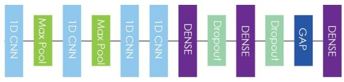
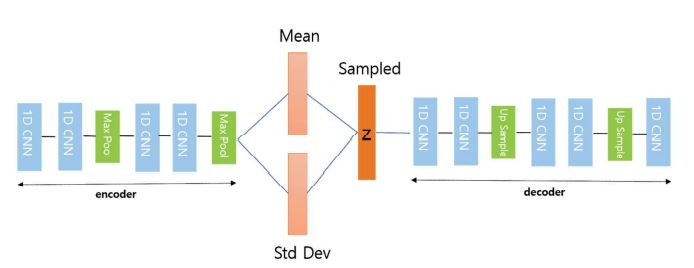

Music Generation Project
- Music Information Retrieval
- AI Music Generation
음원 정보 복원(Music information retrival) 은 음원으로부터 정보를 추출하는 다양한 학문에 걸친 분야로 알려져 있다. MIR은 현실 세계에 다양하게 적용되며, 음악학(musicology), 음향심리학(psychoacoustics), 심리학, 신호처리(signal proecssing), 정보학(informatics), 특히 기계학습 분야에서 분류(Classification) 및 생성(Generation) 등의 형태로 다양하게 적용됩니다. 그 중에서도 자동 음원 생성(automatic music generation) 의 분야는 많은 MIR 연구자들에게 도전적인 주제이며 현재까지 이러한 시도들은 제한된 성공으로 남아있다.

불과 얼마전만 하더라도 인공지능의 창조적 능력에 대한 의구심이 제기됐다. 인간과 기계를 구분하는 ‘감정’은 예술 분야에서 가장 중요한 요소이고 기계는 인간 고유의 영역인 감정을 이해하지 못한다는 의견이 많았다. 하지만 최근 음악 분야에서 글로벌 IT 기업을 필두로 딥러닝 기술을 활용해 음악 작곡에 도전하는 인공지능 프로젝트의 성과는 놀라움을 주고 있으며 “인공지능(AI)이 생산하는 음악의 진행 속도를 고려할 때, 10년 안에 수작업으로 작곡하는 것은 구식이 될 것으로 보인다.” 라는 전문가의 예측도 있다.
OpenAI의 MuseNet(2019), Jukebox(2020) 그리고 Google의 Magenta(2017) 프로젝트는 이러한 딥러닝 방식을 가장 잘 활용한 대표적인 음악 인공지능이다. MuseNet은 GPT-2, Sparse Transformer 모델을 사용하여 많은 양의 MIDI 데이터를 학습하였고 10개 악기를 사용해 새로운 음악을 만들어 낸다. 그리고 Jukebox는 VQ-VAE-2 모델을 기반으로 Waveform의 Long Range Structure와 High diversity를 이해하여 원본과 상당히 유사한 사운드를 생성할 수 있음을 보여주었다.


마지막으로 Google의 Magenta는 음악 시퀀스 데이터의 음악적 특성을 담아 요약된 잠재 벡터로 인코딩하고 그 후에 다시 음악 시퀀스로 디코딩하는 MusicVAE 모델을 사용하였다. 이러한 인공지능이 만들어낸 음악은 아직 인간이 만든 음악과는 구분이 되는 편이고 기존 음악보다 뛰어나다고 볼 수는 없다. 하지만 시간이 흐르고 점차 많은 음악 관련 데이터를 학습하고 컴퓨팅과 하드웨어의 발전이 동반되면 인공지능이 어떠한 음악을 만들어 낼 수 있을지 가늠하기 어렵다.

MusicVAE
Prior work
- Deep Learning based ASMR
딥러닝을 이용하여 기존 ASMR 음원들을 모으고 분류하며 사용자의 선호도를 바탕으로 새로운 ASMR 음원을 생성할 수 있는 플랫폼인 DeepASMR을 제안한다. DeepASMR은 ASMR 음원 분류 및 인식을 위해 기존의 음악 인식이나 소음 인식을 위한 DNN보다 개선된 DNN 모델들을 구축하여 분류의 정확도를 95% 이상까지 높였다.

DNN을 기반으로 기존 ASMR 음원들을 변형하거나 합성하는 방식으로 새로운 ASMR 음원을 생산한다. 이를 위해 VAE(Variational Autoencoder) 및 GAN(Generative Adversarial Network) 방식을 이용하여 ASMR 음원 생성 DNN 모델을 구축하였다. 이를 통해 생성된 ASMR 음원들을 우리의 분류 DNN 모델에 입력하여 그 정확성을 검증한 결과, 70% 이상의 정확도를 보여 제안하는 DNN 모델이 양질의 ASMR 음원들을 생성하였음을 시사한다.

- ASMR Generation Demo

Dataset
VAE
- VAE
Audio Genre:
Original Audio
WAVENET
- WAVENET 설명
VQ-VAE
- VQ-VAE 설명
Melnet
- Melnet 설명